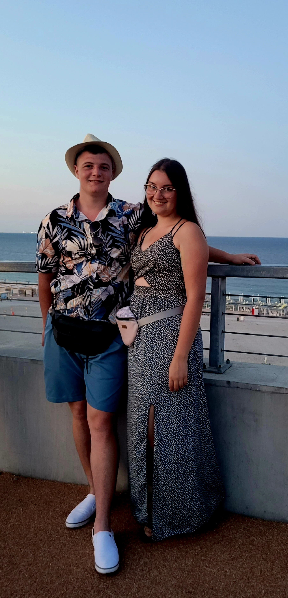

Bár később kiderült, hogy egy iskolához tartoztunk, csak más faluban tanultunk, sőt a 9–12. osztályt is ugyanabban az iskolában jártuk, mégsem találkoztunk soha… egészen addig az estig Erdőfülében, a Fortuna bárban.
Az egész egy „menjünk el sörözni” ötlettel indult — amit Istire az egyik legjobb haverja (aki történetesen az unokatestvérem) erőltetett rá. Én pedig addig soha nem jártam bárokban, de azon az estén az osztállyal az osztályfőnökünknél voltunk énekelni és beszélgetni, majd valahogy megszületett az ötlet: menjünk el a Fortunába.
Ott megláttam az unokatesómat egy asztalnál… és mellette Istit. Leültünk, beszélgetni kezdtünk, és ahelyett, hogy rögtön flörtölés lett volna belőle, teljesen váratlanul a csernobili atomreaktorról és annak működéséről kezdtünk el beszélgetni. Igen. Tényleg. 😄
És pont ez volt az, ami igazán megfogott: nem egy „szokásos” ismerkedés volt, nem sablonos kérdések és próbálkozások, hanem egy furán vicces, abszurd, mégis nagyon őszinte beszélgetés. Valahol ott kezdődött el a mi történetünk.
Azóta volt sok nevetés, közös élmény, és egyre több olyan pillanat, amikor biztosak lettünk benne: együtt szeretnénk folytatni.
Most pedig elérkezett a pillanat, amikor ezt hivatalosan is kimondjuk — és nagyon szeretnénk, ha ti is velünk lennétek.